首頁 >
程式的使用 > Mac OS X 專用版中文化的方法（非跨平台通用版）
程式的安裝：
Telegram on the Mac App Store
註.另有一個跨平台通用版的 Telegram，不要搞錯了：Telegram Desktop
中文化的方法，就是將中文化檔案（Localizable.strings）放到 Telegram 程式中的目錄裡：
正體中文化檔案：https://telegram.me/Tele_zh_TW
檔案放置目錄：
Telegram/Contents/Resources/zh_TW.lproj/
或
Telegram/Contents/Resources/zh_Hant.lproj/
---------------------------------------------------------------------------------------------------
簡體中文：
本站的 电报简体中文化：https://telegram.me/Tele_zh_CN
也可以选择大陆网友提供的简体中文化文件发布频道：
https://telegram.me/transfortelegram
檔案放置目錄：
Telegram/Contents/Resources/zh_CN.lproj/
或
Telegram/Contents/Resources/zh_Hans.lproj/
注意：目錄 zh_XXX.lproj 要自己建立！
這個中文化方法，似乎是蘋果電腦應用程式手動中文化的通用方式...
資料來源：[分享] VMware Fusion 正體中文包 | MacUknow
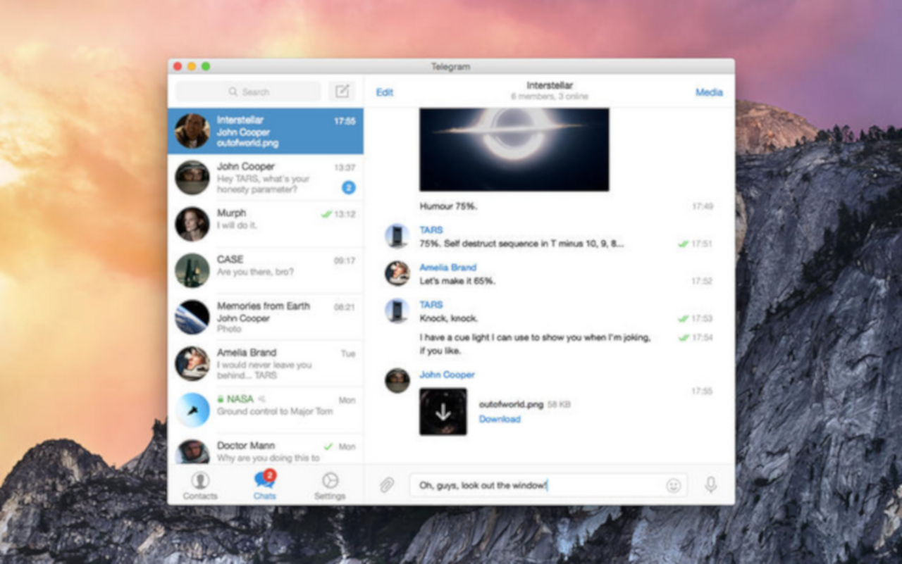
安裝好程式後，在 Launchpad 中開啟程式：
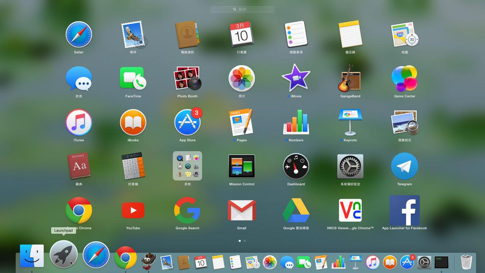
開啟程式：
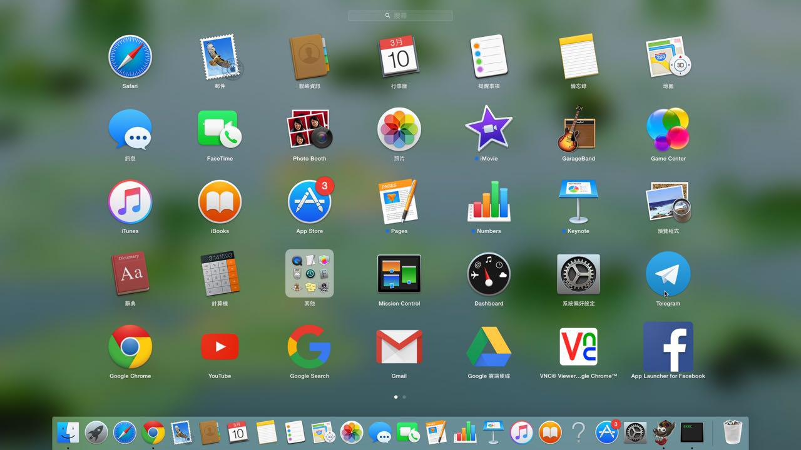
程式開啟後，在 Dock 上 Telegram 圖示上，按滑鼠右鍵出現選單，選「選項」> 「顯示於 Finder」：
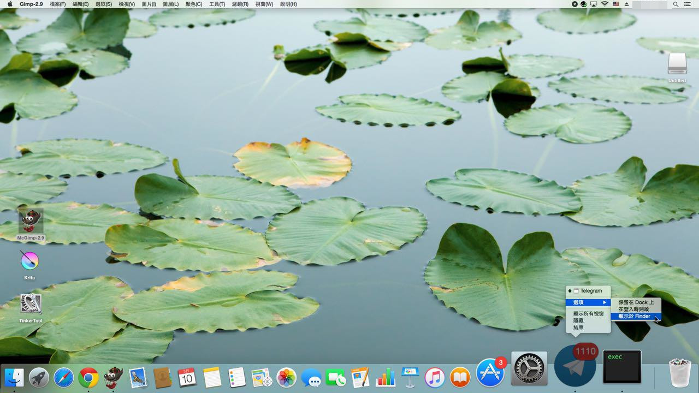
在圖示上按滑鼠右鍵，選「顯示套件內容」：
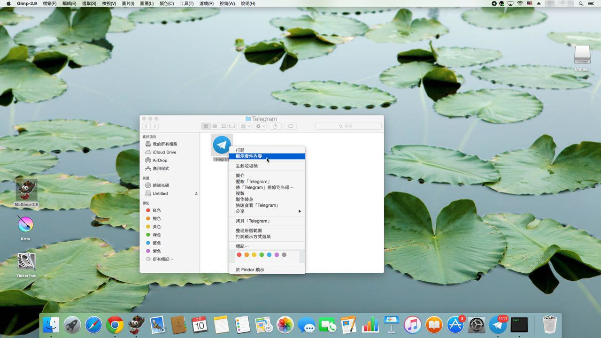
前往 Telegram/Contents/Resources/ 目錄：
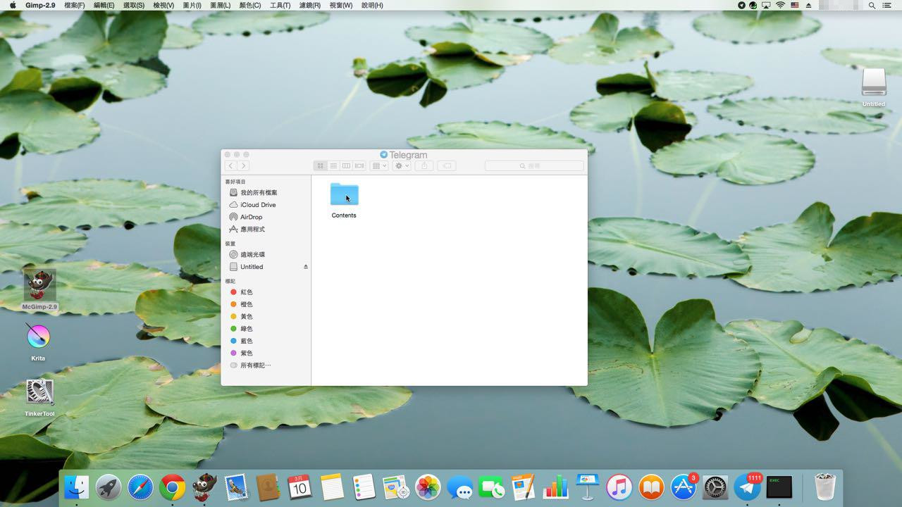
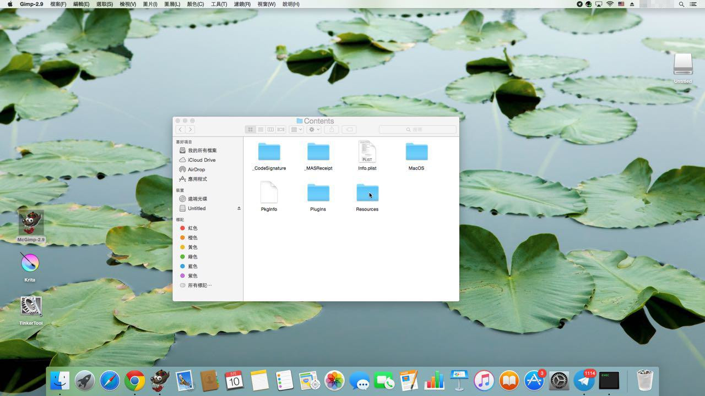
在 Resources 目錄下，建立一個子目錄：zh_TW.lproj（zh_Hant.lproj 也可以！）：
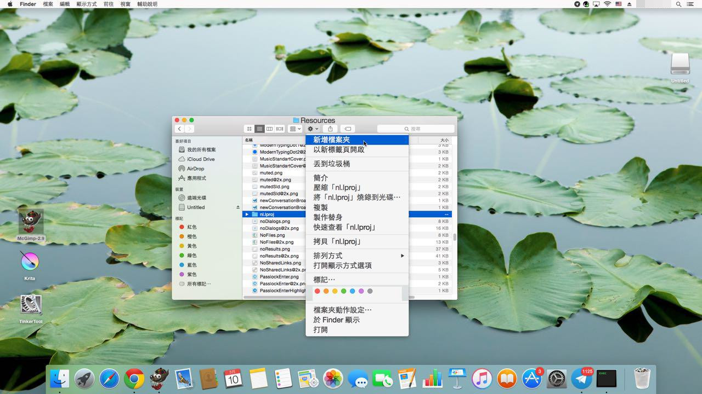
將下載的檔案（Localizable.strings）複製到該目錄下：（檔名的開頭 L 其實要大寫，圖有誤！）
複製：
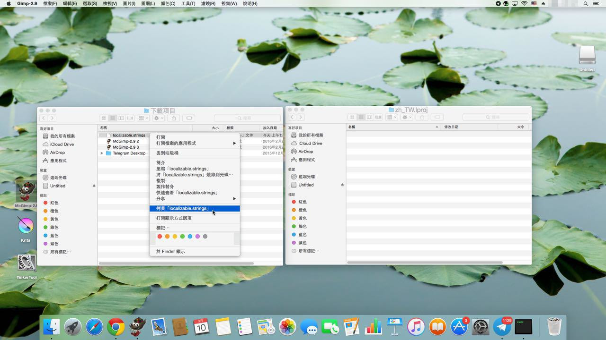
貼上：
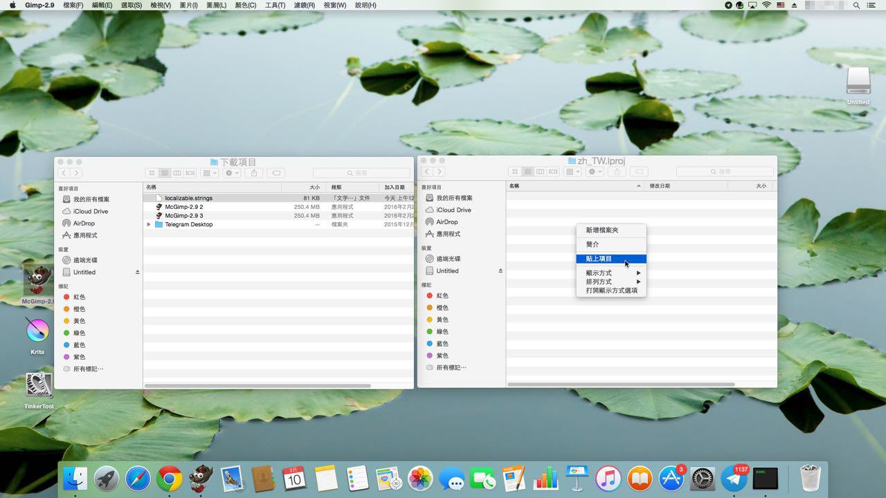
Telegram/Contents/Resources/zh_TW.lproj/Localizable.strings

L 修正為大寫：
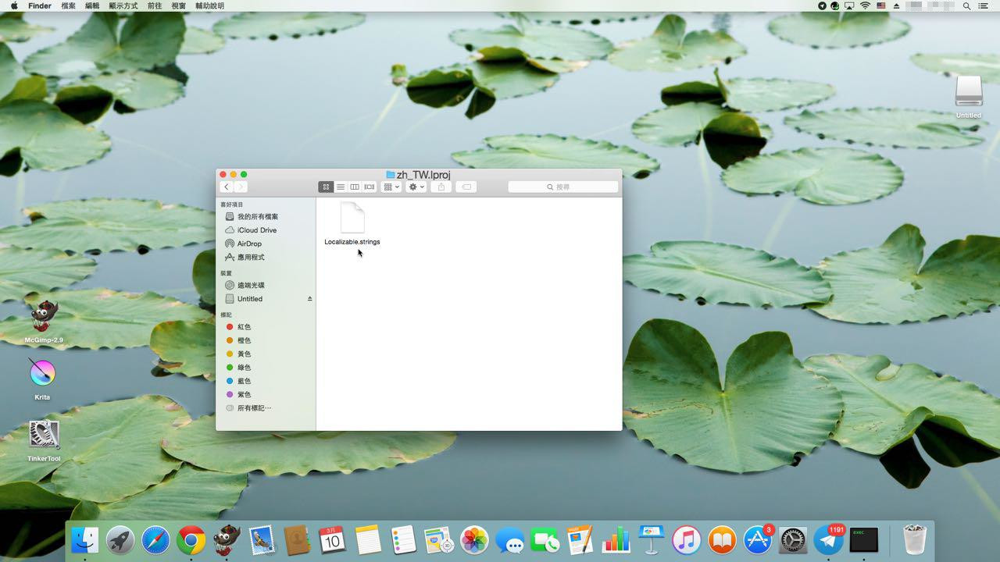
重新在 Launchpad 開啟 Telegram：
就完成中文化了：
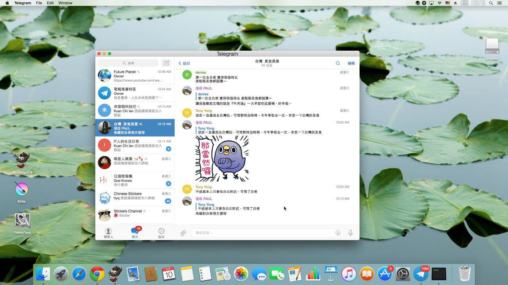